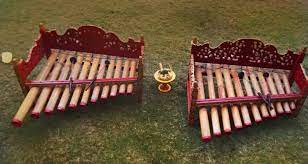

Rindik merupakan salah satu alat musik tradisional Bali dan telah menjadi ciri khas dari budaya Bali. Rindik terbuat dari bambu yang bernada selendro dan dimainkan dengan cara dipukul.
Alat musik ini biasa dimainkan oleh 2-5 orang pemain, di mana 2 orang menabuh Rindik dan sisanya untuk seruling dan gong pulu. Terdapat lima nada dasar yang dimiliki oleh Rindik.
Pada awalnya rindik hanya dibuat sebagai alat untuk menghibur para petani di sawah. Namun, seiring dengan perkembangan zaman, kini Rindik sudah lebih fleksibel dalam pemakaiannya. Beberapa diantaranya adalah sebagai pelengkap
untuk acara pernikahan/resepsi serta dapat pula untuk menyambut tamu.
Sejarah

Berawal ketika pihak wengker (sekarang Ponorogo) melakukan pemberontakan kepada majapahit, banyak angklung Reog yang merupakan senjata kerajaan majapahit juga berfungsi sebagai alat musik di tinggal di kerajaan. Sehingga saat
serbuan dari Demak angklung-angklung dan gamelan di bawa ke Bali sehingga mengalami pergesaran dan kerusakan.
Setiba di bali, orang majapahit mengalami kesulitan saat merangkai gamelan termasuk Angklung, meski angklung di bali tidak di bentuk sedemikian rupa, tetapi tetap menghasilkan suara dengan cara di pukul layaknya gamelan yang
terbuat dari logam, angkung ini berubah nama menjadi rindik yang berasal dari bahasa jawa kuno yang berarti di tata dengan rapi dengan celah yang sedikit. Meskipun angklung Reog berhasil dirangkai dan terciptanya alat musik
Rindik, Angklung Reog tetap di gunakan untuk keperluan keagamaan dan kesenian hingga era kerajan Bali. Tetapi saat ini sudah tidak di teruskan seniman bali karena tidak mencerminkan keraifan lokal Bali.